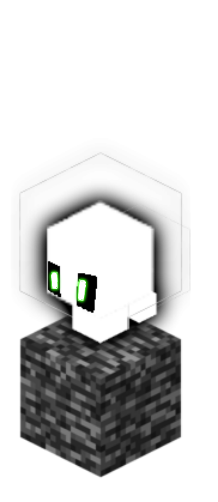
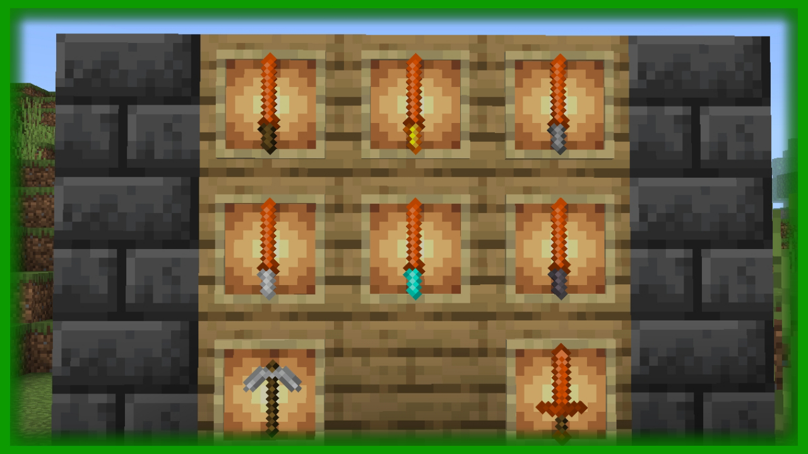
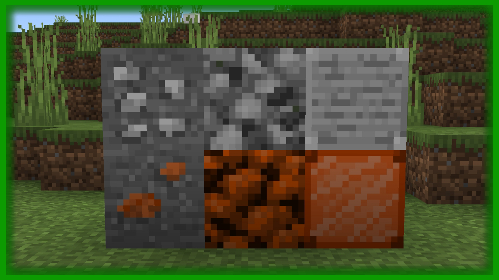
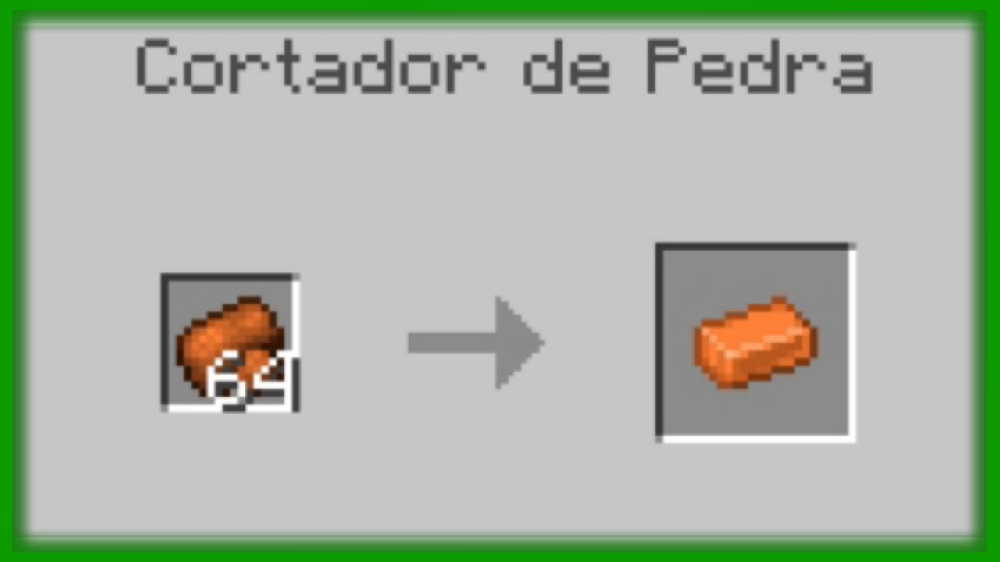
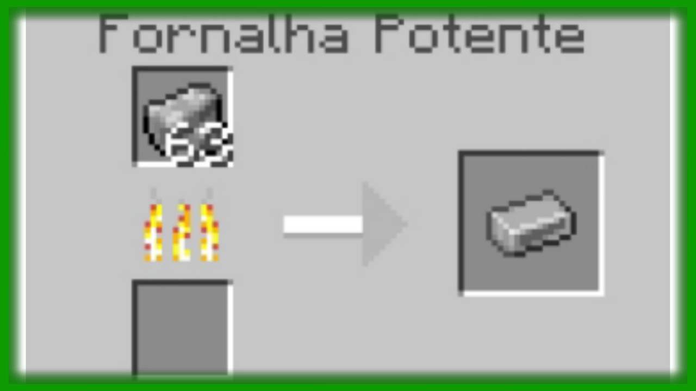

=| Silver and Bronze |=




Nesse Addon, vc pode encontrar no mundo , o Minério de Bronze e Silver em qualquer camada acima da bedrock, o Silver pode ser usado para fazer uma picareta , e com sua versão bruta pode fazer o Bloco, mesma coisa com a versão lingote, que nem o Bronze, porém não consegue fazer uma picareta de Bronze, mas sim uma espada, além disso, você poderá fazer katanas, que usam um bloco de algum material como a parte que segura(tábuas,pedregulho,bloco de ferro,bloco de ouro,bloco de diamante), exceto o com netherita, que só precisaria estar na Smithing Table para fazer o upgrade com uma katana de diamante e um lingote de netherita, e ainda na Smithing Table, pode dar upgrade na sua armadura de netherita, usando um lingote de bronze em cada peça e também com essa versão reforçada com bronze pode ganhar mais um upgrade com silver, aumentando ainda mais a defesa , a durabilidade e além de deixar-la bonita!
•Armaduras:Armadura De Netherita Reforçada com Bronze , Armadura de Netherita Reforçada com Bronze e Silver;
•Biomas:Nenhum;
•Blocos:Bloco de Silver Cru, Bloco de Bronze Cru , Bloco de Silver, Bloco de Bronze;
•Ferramentas:Picareta de Silver, Espada de Bronze, Katana de Madeira com Bronze, Katana de Pedra com Bronze, Katana de Ferro com Bronze, Katana de Diamante com Bronze, Katana de Netherita com Bronze;
•Itens:Barra de Silver, Barra de Bronze, Bronze Cru, Silver Cru;
•Minérios:Minério de Silver, Minério de Bronze;
© 2022 - •| Add-Mods |• - Copyright